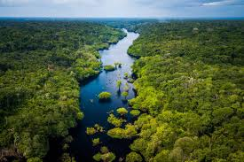
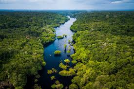

Explorar florestas tropicais como a Amazônia é mereparo físico e respeito à natureza.
"A selva ensina, mas cobra atenção em cada passo." – Expedição Rogulhar em um ecossistema vibrante. É preciso prraima 2024
Explorar florestas tropicais como a Amazônia é mereparo físico e respeito à natureza.
"A selva ensina, mas cobra atenção em cada passo." – Expedição Rogulhar em um ecossistema vibrante. É preciso prraima 2024
O Deserto do Atacama e o Saara foram destinos extremos, onde o calor e a solidão desafiam até os mais preparados.
Alcancei o Pico da Neblina e o Cerro Fitz Roy. A escalada é um teste de força e mente.